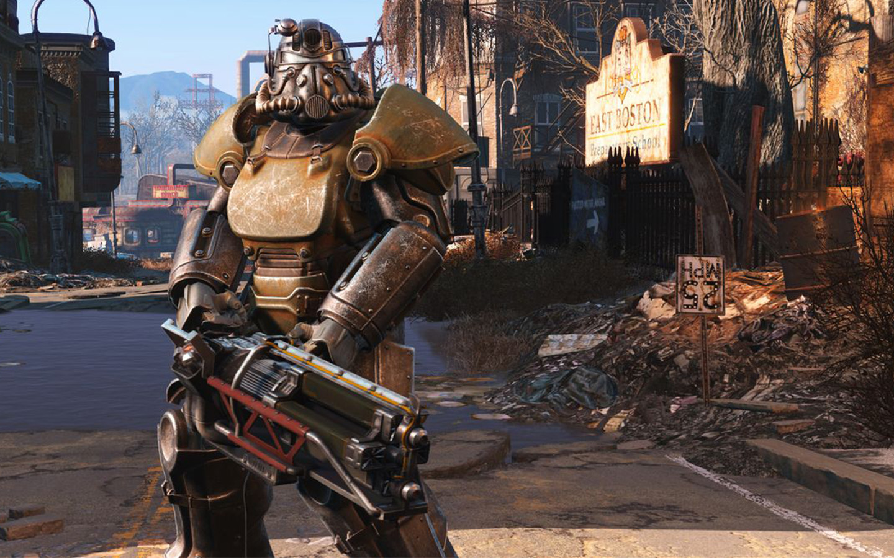
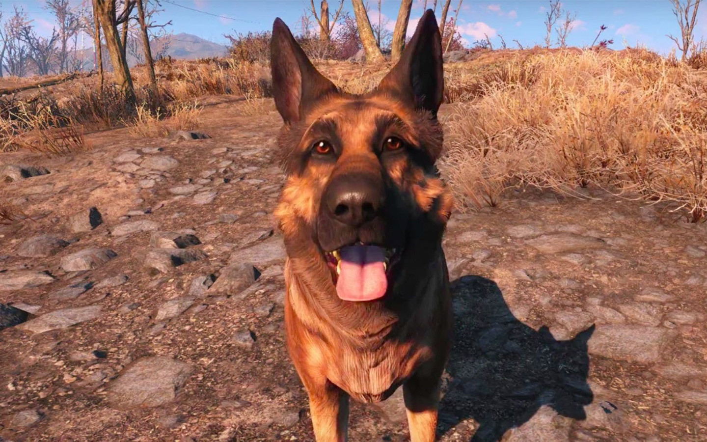
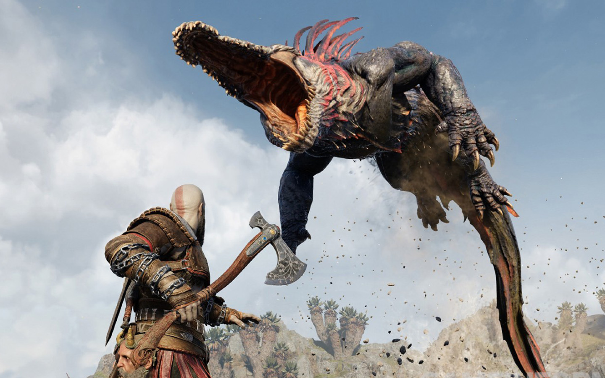
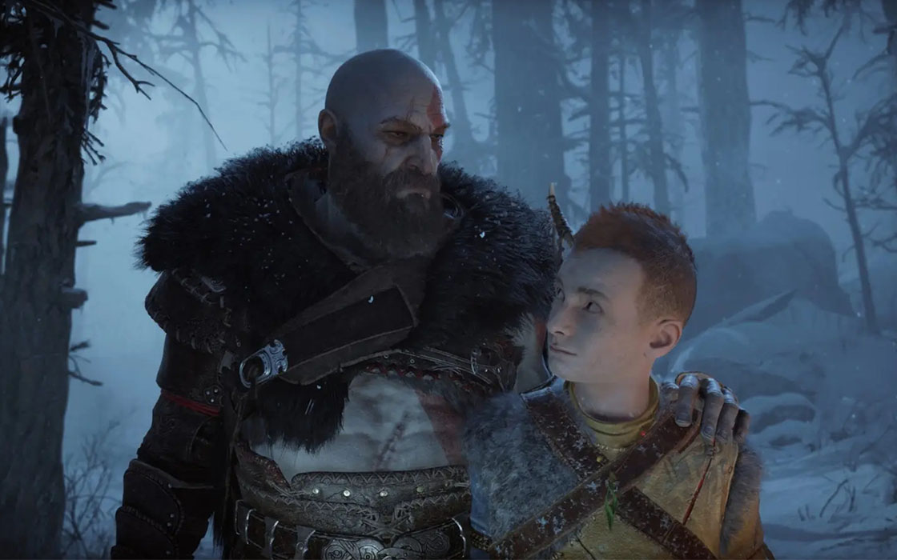
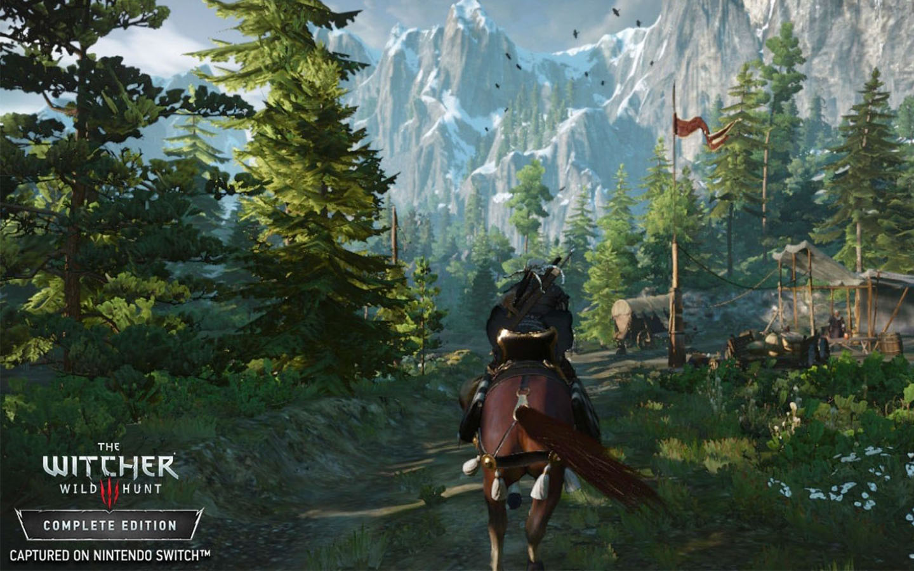
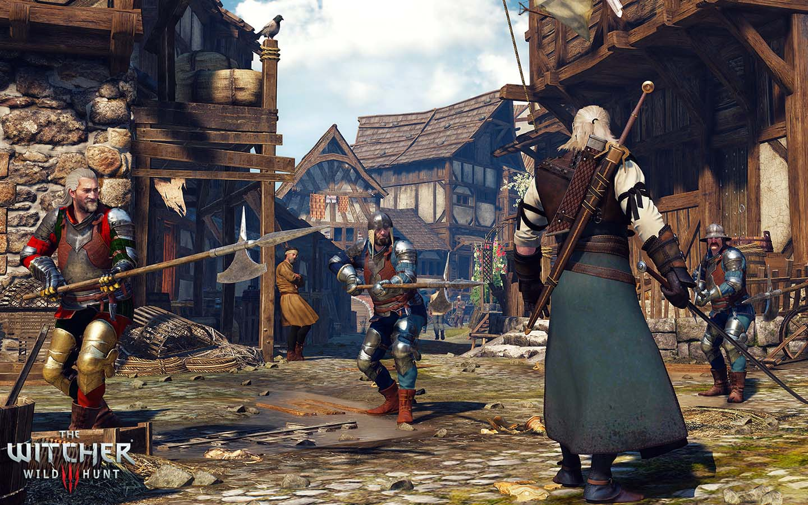

Top Open World Games: Honorable Mentions Screenshots And Opinions
Fallout 4
 God of War: Ragnarok
 The Witcher: Wild Hunt
 Fallout 4
A large amount of people have a strong love for Fallout 4 as it not only has a great amount of lore, but so much detail was put into this game. However, many people play with mods which can add to the fun, but why cant Bethesda just make a game with amazing graphics? They have the money and the people to do it and not only that but the lore and world building is all there! Just do it Bethesda, stop being lazy and listen to your audience who are having to install mods just to get a better experience. Yes, I know Skyrim is the same way as they are also made by Bethesda, but come on...DRAGONS! Dragons are cool and personally I like fantasy better.
God of War: Ragnarok
Before i talk about this game, I want to say the prequel to this SHOULD NOT HAVE WON GAME OF THE YEAR FOR 2018 AND RED DEAD REDEMPTION 2 WAS ROBBED! But that doesnt mean it wasnt enjoyable to play. I picked the sequel to the first one because I started to see the positve change in Kratos and how he has come so far in his journey to forgive himself from his terrible past. So why did I not like this game? Well ill tell you now (this applies to the prequel as well) that the Norse Gods have stupid logic and maybe its just me but I felt as if the characters didn't have a lasting impression on me. I only liked the development of Artreus and Kratos. The game has cool fighting mechanics though.
The Witcher: Wild Hunt
Oh the Witcher, how it is extremly detailed and exeptionally crafted for hours and hours of gameplay. However, this game is EXTREMELY hard to understand as there are too many ways to fight and craft. Seems easy? Well not to me, I cant memorize the spells, and timing the slashes of hitting a monster. I can't even remember what sword to use when battling. This game is just sitting on my home page on my PS4 and I'm not even past the 2nd chapter. I think this game is for people who like Minecraft. I'm sorry to all player who would die hard over this game, but this is my opinion and its okay if I think this game is a little advanced for me. I do like how if you kill too many cows, a cow monster shows up and I think thats halarious.